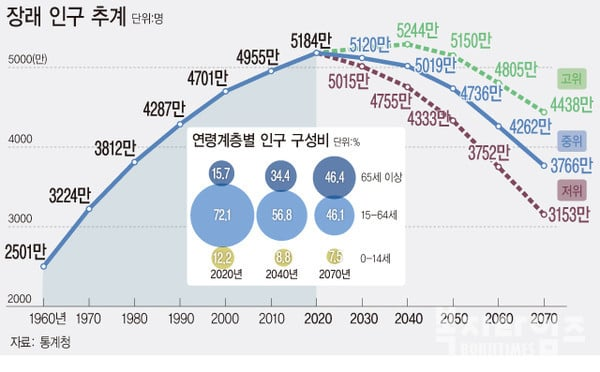

우리나라 출산율 좆박아서 인구수 줄어드는게 사실상 확정인데
그럼 집이 남아도니 부동산 가격 떨어지는게 아니냐 라고 생각할 수 있음
하지만 전국의 집값은 떨어져도 서울은 오히려 더 오르게 됨
우리나라 인구수가 줄어들면 지방 인구가 먼저 소멸되면서 지방 인프라가 제 기능 못하게 됨
즉 지방에서 살기가 더욱더 힘들어지게 되고
사람들은 계속 서울로 몰릴 수 밖에 없음
인구가 줄어들면 줄어들수록 서울 집중 현상이 더 도드라짐
지방에서는 일자리도 없고 먹고 살기도 힘들고 버스 등 대중교통도 계속 축소 될테니까...
그래서 인구수가 줄어들면 줄어들수록 오히려 서울 집값은 계속 오르게 될것임...
3줄요약
1. 인구수가 박살나면 지방이 가장 큰 타격을 입는다.
2. 지방에서는 더욱더 계속 살기 힘들어지면서 사람들은 서울로 몰릴 수 밖에 없다.
3. 결국 서울 집값은 계속 오르게 된다.
인구가 박살날수록 무조건 인프라안으로 들어와야 생존하는데
이거 걍 인류의 생존본능이지 ㅋㅋ
떨어져나가면 죽는다